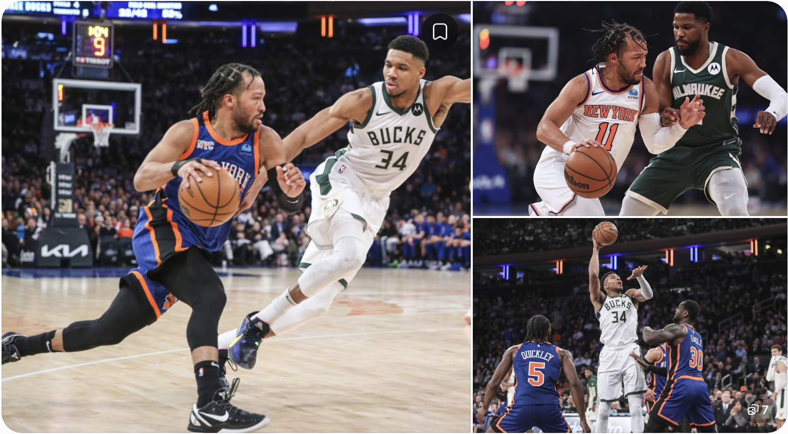

The Milwaukee Bucks visit the New York Knicks on Tuesday night in an Eastern Conference matchup at Madison Square Garden. Both teams enter the game with very different momentum, making this an important opportunity for Milwaukee to respond after a difficult start to the 2026–27 NBA season.
The biggest development before tip-off is the absence of Tyler Herro. Milwaukee's leading scorer has been ruled out with a knee injury, leaving the Bucks without one of their most important offensive players against the defending NBA champions.
New York, meanwhile, has started to find its rhythm after a difficult opening stretch. The Knicks have won five of their last six games, including three consecutive victories, and will look to continue that run in front of their home crowd.
Here's everything to know about Bucks vs Knicks, including the latest Tyler Herro injury update, game information, team form, players to watch and where fans can follow the matchup.
Milwaukee Bucks
New York Knicks
Bucks vs Knicks: Game Details
| Game information | Details |
|---|---|
| Matchup | Milwaukee Bucks vs New York Knicks |
| Date | Tuesday, November 10, 2026 |
| Tip-off | 7:30 PM ET |
| Venue | Madison Square Garden |
| Location | New York City |
| Competition | NBA regular season |
1. Is Tyler Herro Playing Against the Knicks?
Tyler Herro will not play for the Milwaukee Bucks against the New York Knicks on November 10.
Herro was initially listed as questionable after suffering a right knee contusion during Milwaukee's November 8 loss to the Boston Celtics. The Bucks subsequently ruled him out for Tuesday's game.
His absence is a significant development for Milwaukee because he has been the team's leading scorer through the opening stretch of the season.
Before this matchup, Herro was averaging:
| Statistic | Average |
|---|---|
| Points | 21.4 per game |
| Rebounds | 4.6 per game |
| Assists | 4.3 per game |
He was also shooting 45.5% from the field and 39.7% from three-point range, according to the available season statistics.
What happened to Tyler Herro?
Herro suffered a knee contusion during the Bucks' November 8 game against Boston.
He returned to finish that game, scoring 13 points in 27 minutes, but the injury remained a concern ahead of the Knicks matchup. Milwaukee later confirmed that he would be unavailable.
When could Tyler Herro return?
The next scheduled opportunity for Herro to play was Milwaukee's November 11 game against the Los Angeles Lakers.
However, that is an upcoming opportunity, not a confirmed return date. Fans should wait for the Bucks' official injury report before assuming he will be available.
2. How Tyler Herro's Absence Could Affect the Bucks
Losing a player who averages more than 21 points per game creates an important challenge for any team.
For Milwaukee, Herro's absence means other players will need to take on additional offensive responsibility.
The Bucks have struggled to find consistency during the opening weeks of the season. Without their leading scorer, creating reliable offense against New York's defense becomes an even bigger challenge.
Several players could become more important:
Ryan Rollins
Rollins could receive additional opportunities in the backcourt. He is one of the players who may benefit from Herro's absence, particularly if Milwaukee needs more ball-handling and perimeter offense.
Jaime Jaquez Jr.
Jaquez has been one of Milwaukee's leading offensive contributors this season. His ability to attack the basket, create opportunities and contribute in different areas could be important.
Kyle Kuzma
Kuzma provides another scoring option. Milwaukee may need him to be more aggressive offensively if it wants to keep pace with New York.
Myles Turner
Turner's role in the paint and his ability to protect the rim could be important against the Knicks' frontcourt.
The challenge for Milwaukee is not simply replacing Herro's points. The team also needs to maintain offensive rhythm and avoid giving New York easy scoring opportunities.
3. New York Knicks Enter the Game With Strong Momentum
The Knicks have experienced a noticeable improvement after losing their first three games of the season.
They have won five of their last six contests and entered Tuesday's matchup on a three-game winning streak. Their latest victory was a 109–97 road win against the Cleveland Cavaliers.
Two players were particularly important in that performance.
Jalen Brunson
Brunson scored 31 points against Cleveland and played a major role in New York's victory. His scoring and ability to organize the offense make him one of the most important players to watch against Milwaukee.
Karl-Anthony Towns
Towns also delivered a strong performance against Cleveland, finishing with 29 points. His scoring, rebounding and ability to stretch the floor give New York another major offensive option.
The Knicks will want to use their home-court advantage and recent momentum to put pressure on Milwaukee early.
4. Bucks vs Knicks: Recent Team Form
The difference between the two teams' opening stretches is one of the main storylines entering this matchup.
| Team | Record before game | Recent form |
|---|---|---|
| Milwaukee Bucks | 1–9 | Six consecutive losses |
| New York Knicks | 5–4 | Five wins in last six |
Milwaukee's latest defeat came against Boston, which won 117–97 on November 8. The Bucks had also lost to Toronto, Boston, Minnesota and Cleveland during their difficult opening stretch.
New York, in contrast, has built momentum through victories over Cleveland, Chicago and Brooklyn. Its recent performances have helped the team move above .500.
Why are the Bucks struggling?
Milwaukee has been dealing with a difficult transition following the departure of Giannis Antetokounmpo.
The team entered the 2026–27 season with a different roster and new expectations. Its early results have exposed problems with offensive consistency and defensive performance.
Before the Knicks game, Milwaukee was averaging 108.4 points per game while allowing 121.6 points per game.
Those numbers help explain why the Bucks have struggled to turn competitive stretches into victories.
5. Key Players to Watch in Bucks vs Knicks
Although Tyler Herro will miss the game, several players could influence the outcome.
Jalen Brunson – Knicks
New York's leading offensive creator. His scoring and playmaking will be important against Milwaukee.
Karl-Anthony Towns – Knicks
A major scoring and rebounding option who can create problems inside and outside the paint.
Jaime Jaquez Jr. – Bucks
Milwaukee may need additional scoring and playmaking from Jaquez with Herro unavailable.
Kyle Kuzma – Bucks
His offensive contribution could become more important in Herro's absence.
Ryan Rollins – Bucks
A potential beneficiary of the additional backcourt opportunities created by Herro's injury.
6. Bucks vs Knicks Prediction: Who Has the Advantage?
The New York Knicks enter this matchup with a clear advantage based on recent performances, home-court advantage and Milwaukee's injury situation.
New York has won five of its last six games, while Milwaukee has lost six consecutive contests.
Herro's absence adds another challenge for the Bucks because they will be without their leading scorer.
A pregame prediction from Dimers, reported by Advance Local, projected a Knicks victory of 118–105. That is a model projection, not a confirmed result.
What could help Milwaukee?
- Limit turnovers and avoid giving New York easy transition points.
- Find additional scoring without Herro.
- Improve defensive rebounding.
- Make open three-point attempts.
- Keep Brunson and Towns from controlling the game.
What could help New York?
- Using Brunson's playmaking to create scoring opportunities.
- Taking advantage of Milwaukee's defensive struggles.
- Controlling the rebound battle.
- Maintaining the pace and intensity that helped them win recent games.
7. Where to Watch Bucks vs Knicks
The game is scheduled for Tuesday, November 10, at 7:30 PM Eastern Time at Madison Square Garden in New York.
The listed regional broadcast options include WCGV, Bucks+, MSG and DAZN-MSG. Availability depends on the viewer's location and regional broadcasting restrictions.
Fans can also follow live scores, game updates, player statistics and the final box score through the official NBA game page:
NBA.com – Bucks vs Knicks Game Center
8. Frequently Asked Questions
1. Are the Bucks playing the Knicks on November 10, 2026?
2. Is Tyler Herro playing against the Knicks?
3. What happened to Tyler Herro?
4. How many points is Tyler Herro averaging?
5. Who is favored in Bucks vs Knicks?
6. Where is Bucks vs Knicks being played?
7. What time does Bucks vs Knicks start?
8. When could Tyler Herro play again?
Conclusion
The Bucks vs Knicks matchup brings together two teams heading in very different directions.
New York enters with strong momentum after winning five of its last six games, while Milwaukee is trying to recover from a difficult start to the season.
The biggest story before tip-off is Tyler Herro's absence. His knee contusion leaves the Bucks without their leading scorer and puts additional pressure on players such as Jaime Jaquez Jr., Kyle Kuzma and Ryan Rollins.
The Knicks have an opportunity to continue their winning run at Madison Square Garden, but Milwaukee will be looking for a response.
For fans searching for Bucks vs Knicks, Knicks vs Bucks, Tyler Herro injury news and the latest NBA game updates, this matchup offers plenty of storylines to follow.
Editorial note: This is a pregame preview. After the game finishes, update the final score, quarter-by-quarter scoring, key performances, and change the title to reflect the actual result.